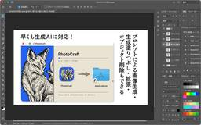

コリス
https://coliss.com
Web制作に関する最新の情報をご紹介
フィード
異世界の創作資料として役立つ！ 社会科的観点から世界観を組み立てるための解説書 -空想世界をつくる社会の教科書 1
1
コリス
※本ページは、アフィリエイト広告を利用しています。 異世界（特に古代・中世・近世をベースにした空想の世界）を舞台にした小説、マンガ、同人誌を創作するときに、役立つ社会の教科書を紹介します。 異世界ものといっても内容すべて […]
3日前
使いやすくて、操作性もめちゃくちゃ気持ちイイ！ さまざまなアプリに対応したmacOS用のアクションリング -Opie 19
コリス
macOSのさまざまなアプリで、それぞれの機能に対応したサークル状のアクションリングを使えるようにする無料アプリを紹介します。機能やショートカットを実行したり、ランチャーとしてアプリを起動したり、ファイルを変換したり、音 […]
4日前

これを待ってた！ 「PhotoCraft」でAIによる生成塗りつぶし・オブジェクトの削除が使えるようになりました、しかも完全無料 73
コリス
Photoshopをオープンソースで再構築した「PhotoCraft」が早くも日本語フォントの縦書きに対応し、各ツールの使い勝手も向上したとお伝えしたのは先週ですが、あれからさらにバージョンアップを重ね、ついに生成AIも […]
5日前
近未来のデザインが大好物な人に！ ネオン、SF、サイバーパンクにインスパイアされたUIコンポーネント -NeonBlade UI 2
コリス
マトリックス、トロン、トータル・リコール、マイノリティ・リポートなど、近未来のデザインが大好物な人にお勧めしたい近未来志向のUIコンポーネントを紹介します。 ASCII文字が落下するエフェクト、六角形のエッジに沿って流れ […]
6日前
2026年読書の秋、Kindle本の特大セールが開催！ サイバーセキュリティ、デザインやイラスト関連の良書が超お買い得です
コリス
※本ページは、アフィリエイト広告を利用しています。 Kindle本 読書の秋セールが開催しています！ サイバー攻撃の仕組みや防御の実践スキルを学べるセキュリティの解説書をはじめ、Webや紙のデザイン、HTML/CSSなど […]
7日前

Adobeの生成AIでクオリティがあがるプロンプトや設定を詳しく解説したデザイン書 -生成AIデザイン制作入門ガイド
コリス
※本ページは、アフィリエイト広告を利用しています。 Adobe Fireflyの正式版がリリースされてから早くも3年が経ちました。ブラウザから利用するWebアプリをはじめ、PhotoshopやIllustratorにも移 […]
10日前
CSSで乱数を生成できるrandom()関数がついにサポート！ Chrome 156で新しく追加された6つのCSSの機能
コリス
昨日アップデートされたChrome 156に追加された、CSSとUIに関する新しい機能を紹介します。 今回のアップデートで注目すべきは、CSSで乱数を生成できるrandom()関数、:navigation-source疑 […]
11日前
CoreServer（コアサーバー）でPHPのバージョンを確認、アップデートする方法
コリス
PHP公式サイトから「近日公開予定のPHPセキュリティに関する重要なリリース」リリースされ、昨日から数多くのWebサービス・サイトで対応が迫られています。 当ブログもWordPressで運営しているので、PHPのアップデ […]
11日前
さまざまなUI要素をゼリーみたいにぷるるんとした質感にする、かわいいUIコンポーネントライブラリ -Jelly UI
コリス
Webサイトやアプリに使用されているさまざまなUI要素・UIコンポーネントをゼリーみたいにぷるるんとした質感にするライブラリを紹介します。 ボタンやアイコンをはじめ、フォームの入力欄やタブやカードなど、あらゆる要素をゼリ […]
12日前
Photoshopをオープンソースで再構築した「PhotoCraft」が日本語フォントの縦書きに対応、各ツールの使い勝手も向上
コリス
2週間ほど前に紹介した、PhotoshopやIllustratorなど、Adobeアプリ7種類をオープンソースで再構築した「Crafting Apps」がものすごい勢いでアップデートを繰り返しています！ リリースされた当 […]
13日前